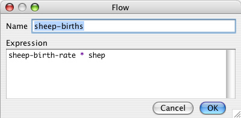
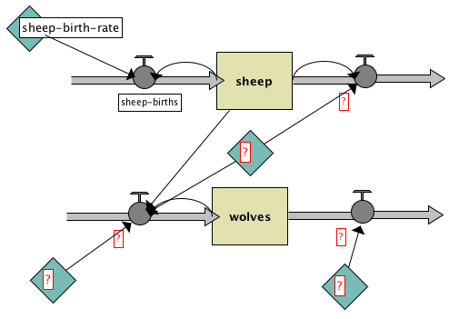

This guide has three parts:
System Dynamics is a type of modeling where you try to understand how things relate to one another. It is a little different from the agent-based approach we normally use in NetLogo models.
With the agent-based approach we usually use in NetLogo, you program the behavior of individual agents and watch what emerges from their interaction. In a model of Wolf-Sheep Predation, for example, you provide rules for how wolves, sheep and grass interact with each other. When you run the simulation, you watch the emergent aggregate-level behavior: for example, how the populations of wolves and sheep change over time.
With the System Dynamics Modeler, you don’t program the behavior of individual agents. Instead, you program how populations of agents behave as a whole. For example, using System Dynamics to model Wolf-Sheep Predation, you specify how the total number of sheep would change as the total number of wolves goes up or down, and vice versa. You then run the simulation to see how both populations change over time.
The System Dynamics Modeler allows you to draw a diagram that defines these populations, or “stocks”, and how they affect each other. The Modeler reads your diagram and generates the appropriate NetLogo code – global variables, procedures and reporters – to run your System Dynamics model inside of NetLogo.
A System Dynamics diagram is made of four kinds of elements: Stocks, Variables, Flows and Links.
A Stock is a collection of stuff, an aggregate. For example, a Stock can represent a population of sheep, the water in a lake, or the number of widgets in a factory.
A Flow brings things into, or out of a Stock. Flows look like pipes with a faucet because the faucet controls how much stuff passes through the pipe.
A Variable is a value used in the diagram. It can be an equation that depends on other Variables, or it can be a constant.
A Link makes a value from one part of the diagram available to another. A link transmits a number from a Variable or a Stock into a Stock or a Flow.
The System Dynamics Modeler figures out how the value of your Stocks change over time by estimating them over and over. The estimation isn’t always perfect, but you can affect its accuracy by changing the value of dt. As dt decreases, you estimate the model more frequently, so it gets more accurate. However, decreasing dt also makes the model slower.
There are four basic models in the Sample Models section of the NetLogo Models Library that demonstrate the use of the System Dynamics Modeler. All four basic models explore population growth (and, in models with predation, population decline).
Exponential Growth and Logistic Growth are simple examples of growth in one stock.
Wolf Sheep Predation (System Dynamics) is an example of a system with multiple stocks influencing one another. It models a predator-prey ecosystem using the System Dynamics Modeler.
Wolf Sheep Predation (Docked Hybrid) is an example of a model that runs both the a System Dynamics model and an agent-based model side-by-side. It runs the System Dynamics implementation of Wolf-Sheep Predation next to the agent-based Wolf Sheep Predation model from the Biology section of Sample Models.
To open the System Dynamics Modeler, choose the System Dynamics Modeler item in the Tools menu. The System Dynamics Modeler window will appear.
The Diagram tab is where you draw your System Dynamics diagram.
The toolbar contains buttons to edit, delete and create items in your diagram.
A System Dynamics diagram is made up of four kinds of components: Stocks, Variables, Flows and Links.
To create a Stock, press the Stock button in the toolbar and click in the diagram area below. A new Stock appears. Each Stock requires a unique name, which becomes a global variable. Stocks also require an **Initial value**. It can be a number, a variable, a complex NetLogo expression, or a call to a NetLogo reporter.
To create a Variable, press the Variable button and click on the diagram. Each Variable in the System Dynamics Model requires a unique name, which becomes the name of a procedure, or a global variable. Variables also require an **Expression**. This expression can be a number, a variable, a complex NetLogo expression, or a call to a NetLogo reporter.
To create a Flow, press the Flow button. Click and hold where you want the Flow to begin -- either on a Stock or in an empty area -- and drag the mouse to where you want the Flow to end -- on a Stock or in an empty area. Each Flow requires a unique name, which becomes a NetLogo reporter. Flows require an **Expression**, which is the rate of flow from the input to the output. This expression can be a number, a variable, a complex NetLogo expression, or a call to a NetLogo reporter. If the value is negative, the flow is in the opposite direction.
When more than one Flow is connected to a Stock, it is important to consider how they should interact with one another. NetLogo will not enforce that the Flows out of a stock occur in any particular order. Also, NetLogo will not ensure that the sum of Flows out of a Stock are less than or equal to the value of the Stock. These behaviors can be implemented explicitly when creating the Expression for a Flow.
For example, if the Flow is defined as a constant value, 10, you can ensure
it never draws more than the value of the Stock by using the min
primitive: min (list stock 10). If I want Flow A to deplete a Stock before
Flow B is calculated, I can link Flow A to Flow B and modify Flow B to
subtract Flow A’s value from the stock:
min (list (max (list 0 (stock - flow-a))) 10).
To create a Link, click and hold on the starting point for the link -- a Variable, Stock or Flow -- and drag the mouse to the destination Variable or Flow.
When you create a Stock, Variable, or Flow, you see a red question-mark on the element. The question-mark indicates that the element doesn’t have a name yet. The red color indicates that the Stock is incomplete: it’s missing one or more values required to generate a System Dynamics model. When a diagram element is complete, the name turns black.
Selecting: To select a diagram element, click on it. To select multiple elements, hold the shift key. You can also select one or more elements by dragging a selection box.
Editing: To edit a diagram element, select the element and press the “Edit” button on the toolbar. Or just double-click the element. (You can edit Stocks, Flows and Variables, but you can’t edit Links).
Moving: To move a diagram element, select it and drag the mouse to a new location.
On the right side of the toolbar is the default dt, the interval used to approximate the results of your System Dynamics model. To change the value of the default dt for your aggregate model, press the Edit button next to the dt display and enter a new value.
When you click the “check” button or when you edit a stock, flow, or variable the modeler will automatically generate the NetLogo code the corresponds to your diagram and try to compile that code. If there is an error the Code tab will turn red and a message will appear, and the portion of the generated code that is causing the trouble will be highlighted.
This should give you a better idea which element in the diagram is causing the problem. 
The System Dynamics Modeler generates NetLogo variables and procedures based on the contents of your diagram. These procedures are what make the diagram actually perform calculations. The Code tab in the System Dynamics Modeler window displays the NetLogo procedures generated from your diagram.
You can’t edit the contents of the Code tab. To modify your System Dynamics mode, edit the diagram.
Let’s take a closer look at how the generated code relates to the diagram:
The variables and procedures defined in this tab are accessible in the main NetLogo window, just like the variables and procedures you define yourself in the main NetLogo Code tab. You can call the procedures from the main Code tab, from the Command Center, or from buttons in the Interface tab. You can refer to the global variables anywhere, including in the main Code tab and in monitors.
There are three important procedures to notice: system-dynamics-setup,
system-dynamics-go, and system-dynamics-do-plot.
system-dynamics-setup initializes the aggregate model. It sets the value
of dt, calls reset-ticks, and initializes your stocks and your converters.
Converters with a constant value are initialized first, followed by the stocks
with constant values. The remaining stocks are initialized in alphabetical
order.
system-dynamics-go runs the aggregate model for dt time units. It
computes the values of Flows and Variables and updates the value of Stocks. It
also calls tick-advance with the value of dt. Converters and Flows with
non-constant Expressions will be calculated only once when this procedure is
called, however, their order of evaluation is undefined
system-dynamics-do-plot plots the values of Stocks in the aggregate model.
To use this, first create a plot in the main NetLogo window. You then need to
define a plot pen for each Stock you want to be plotted. This procedure will use
the current plot, which you can change using the set-current-plot command.
The diagram you create with the System Dynamics Modeler, and the procedures generated from your diagram, are part of your NetLogo model. When you a save the NetLogo model, your diagram is saved with it, in the same file.
Let’s create a model of Wolf-Sheep Predation with the System Dynamics Modeler.
- Open a new model in NetLogo.
- Launch the System Dynamics Modeler in the Tools menu.
Our model will have a population of wolves and a population of sheep. Let’s start with the sheep. First, create a Stock that holds a population of Sheep.
- Press the Stock button in the toolbar.
- Click in the diagram area.
You see a Stock with a red question-mark in the middle.
- Double-click the Stock to edit.
- Name the stock
sheep- Set the initial value to
100.- Deselect the Allow Negative Values checkbox. It doesn’t make sense to have negative sheep!
Our sheep population can increase if new sheep are born. To add this to our diagram, we create a Flow into the stock of sheep.
- Click on the Flow button in the toolbar and press the mouse button in an empty area to the left of the sheep Stock. Drag the Flow to the right until it connects to the sheep Stock and let go.
- Edit the Flow and name it
sheep-births.- For now, enter a constant, such as
1, into the Expression field.
The number of sheep born during a period of time depends on the number of sheep that are alive: more sheep means more reproduction.
- Draw a Link from the
sheepStock to thesheep-birthsFlow.
The rate of sheep births also depends on some constant factors that are beyond the scope of this model: the rate of reproduction, etc.
- Create a Variable and name it
sheep-birth-rate. Set its value to0.04.- Draw a Link from the
sheep-birth-rateVariable to thesheep-births.
Your diagram should look something like this:
Our diagram has the correct structure but we aren’t yet finished because it the amount of sheep flowing into the stock doesn’t depend upon the number of sheep and sheep birth rate.
- Edit the
sheep-birthsFlow and set the expression tosheep-birth-rate * sheep.
We now have a complete diagram. To see the NetLogo code generated by our diagram, you can click on the Code tab of the System Dynamics Modeler window. It looks like this:
Once you create an aggregate model with the System Dynamics Modeler, you can
interact with the model through the main NetLogo interface window. Let’s build
our NetLogo model to run the code generated by our diagram. We’ll need a setup
and go buttons which call the system-dynamics-setup and system-dynamics-go
procedures created by the System Dynamics Modeler. And we’ll want a monitor and
a plot to watch the changes in sheep population.
- Select the main NetLogo window
- In the Code tab, write:
to setup ca system-dynamics-setup end to go system-dynamics-go system-dynamics-do-plot end- Move to the Interface tab
- Create a
setupbutton- Create a
gobutton (don’t forget to make it forever)- Create a
sheepmonitor.- Create a plot called “populations” with a pen named “sheep”.
Now we’re ready to run our model.
- Press the setup button.
- Don’t press the “go” button yet. Instead, type
gofour or five times into the Command Center.
Notice what happens. The sheep population increases exponentially. After four or five iterations, we have an enormous number of sheep. That’s because we have sheep reproduction, but our sheep never die.
To fix that, let’s finish our diagram by introducing a population of wolves which eat sheep.
- Move back to the System Dynamics window
- Add a stock of wolves
- Add Flows, Variables and Links to make your diagram look like this: 
- Add one more Flow from the
wolvesStock to the Flow that goes out of the Sheep stock.- Fill in the names of the diagram elements so it looks like this:

where
initial-value ofwolvesis30,
wolf-deathsiswolves * wolf-death-rate,
wolf-death-rateis0.15,
predator-efficiencyis.8,
wolf-birthsiswolves * predator-efficiency * predation-rate * sheep,
predation-rateis3.0E-4,
andsheep-deathsissheep * predation-rate * wolves.Adjust the
dtof the system dynamics model by selecting “Edit” next todtin the toolbar of the system dynamics modeler. In the dialog that appears, enter0.01.
Now we’re really done.
- Go back to the main NetLogo window
- Add a plot pen named “wolves” to the population plot
- Press
setupandgoto see your System Dynamics Modeler diagram in action.
You see a plot of the populations that looks like this: